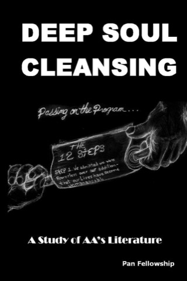
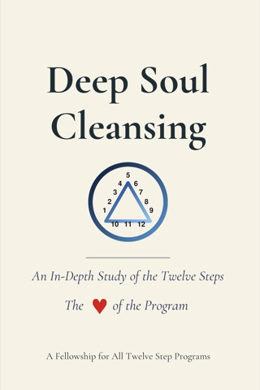
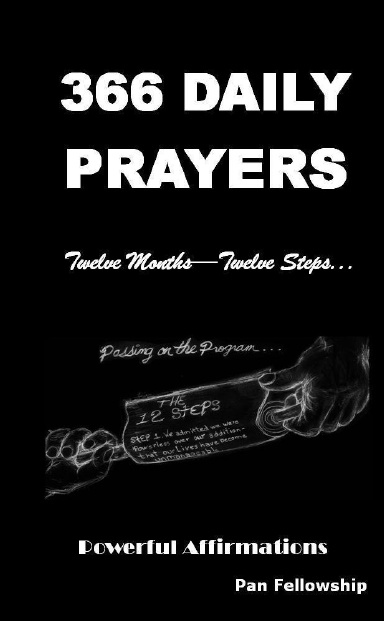
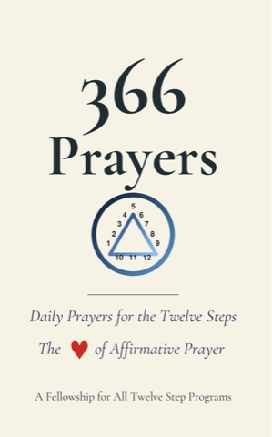

Deep Soul Cleansing
First Edition
The Twelve Steps as a way of life — the book behind the work and the Pan meetings.
Available now
Get the book →
The books, the study materials, the audiobook and the downloadable guides — so the Steps carry on between meetings.
Books & study materials

First Edition
The Twelve Steps as a way of life — the book behind the work and the Pan meetings.
First Edition · Audiobook
The full read of Deep Soul Cleansing, First Edition, in the author’s voice.

Second Edition
An In-Depth Study of the Twelve Steps — the Heart of the Program. Deep Soul Cleansing reads the Twelve Steps not as a Program for one addiction, but as a way of life open to everyone who has been held by one. The Second Edition adds about a hundred pages: the Ninth Step Promises in the present tense, a new Part on The Biological Chemistry of Addiction, and a new chapter deepening the Twenty-Six Principles within and around the Steps.
Second Edition · Audiobook
The full read of Deep Soul Cleansing, Second Edition, in the author’s voice.
First Edition
The original companion to Deep Soul Cleansing — suggested readings and writing for all Twelve Steps, with room for more than 300 forms within for a full inventory.
Second Edition
Work the Steps page by page, alongside Deep Soul Cleansing — suggested to be worked with the aid of a sponsor. The blank inventory forms are no longer bound in — they are free to download online.
For those carrying the message: how to take another through the Program — the Steps. This is an attempt to gather in one place the knowledge of how to sponsor, established over many years and put together to the best of our ability. To our knowledge it has not been attempted before, and we humbly present this first attempt.

First Edition
Twelve Months — Twelve Steps… Powerful affirmations for every day of the year.

Second Edition
An affirmative prayer for every day of the year.
In the first edition of Deep Soul Cleansing we found twelve Principles to go along with the Twelve Steps. Over the years since, we have discovered the possibility of twenty-six Principles within and around the Program that help us understand each of the Twelve Steps more readily. We hope this material will aid our understanding of the Twelve Steps and the Power within them.
Proceeds support the fellowship, in keeping with the Seventh Tradition.
Downloads
Meeting materials for anyone carrying the message — free of charge. Tell us where to send them.
The Pan preamble, meeting format and opening prayer — for anyone starting a meeting. If you start one, please contact us so we can list it on this site.